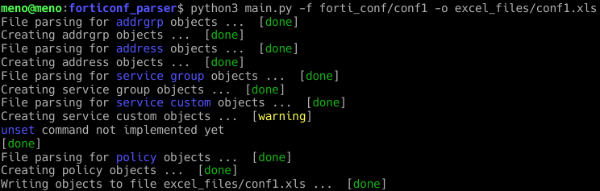

Utilisation¶
Après avoir installer les paquets prérequis. Vous pouvez à présent utiliser le script.
Linux (debian)¶
Rendez-vous au répertoire dans lequel il y a le script.
Sur Linux vous pouvez lancer le script en utilisant la commande suivante:
$ python3 main.py -f forti_conf/conf1 -o excel_files/conf1.xls
Ou
$ ./main.py -f forti_conf/conf1 -o excel_files/conf1.xls
Vous obtiendrez un résultat similaire au suivant:
Windows¶
Assurez vous d’être dans le répertoire où se trouve votre script.
Puis tapez la commande suivante:
$ python main.py -f forti_conf/conf1 -o excel_files/conf1.xls